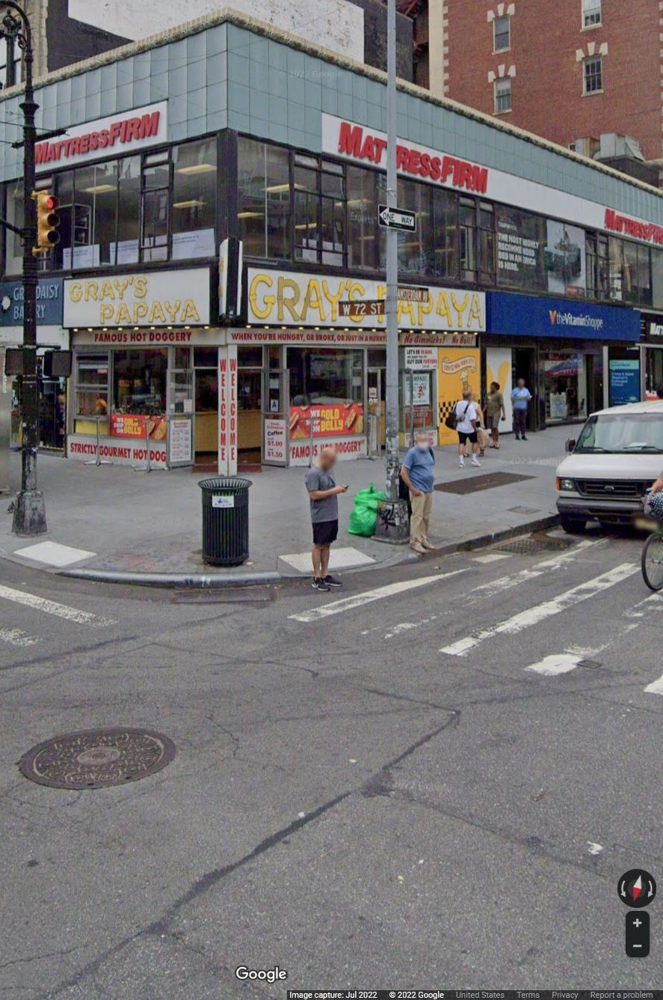
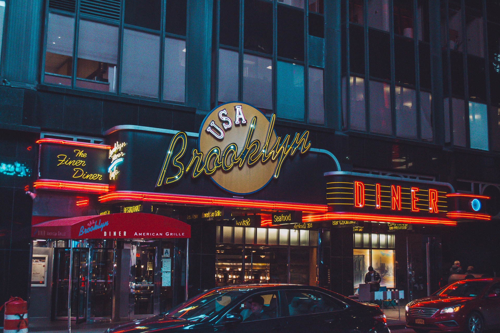

You step out of the Subway station onto the busy NYC sidewalk, but what do you want to eat? There's the famous Gray's Papaya, or the restaurant across the street.
 Gray's Papaya image provided by: (Map Data) Google, Maxar Technologies Street View Jul 2022, copyright Google